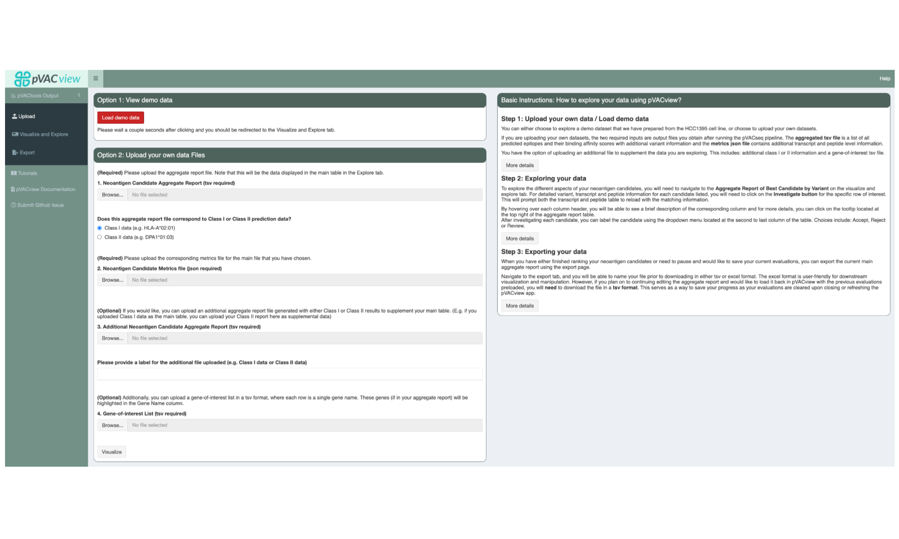
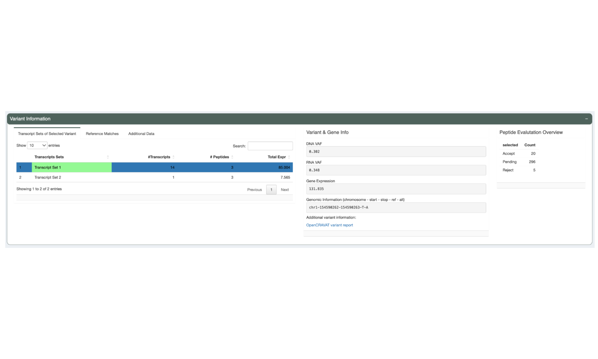
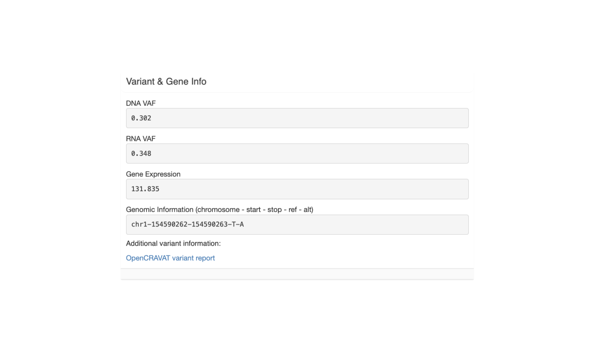
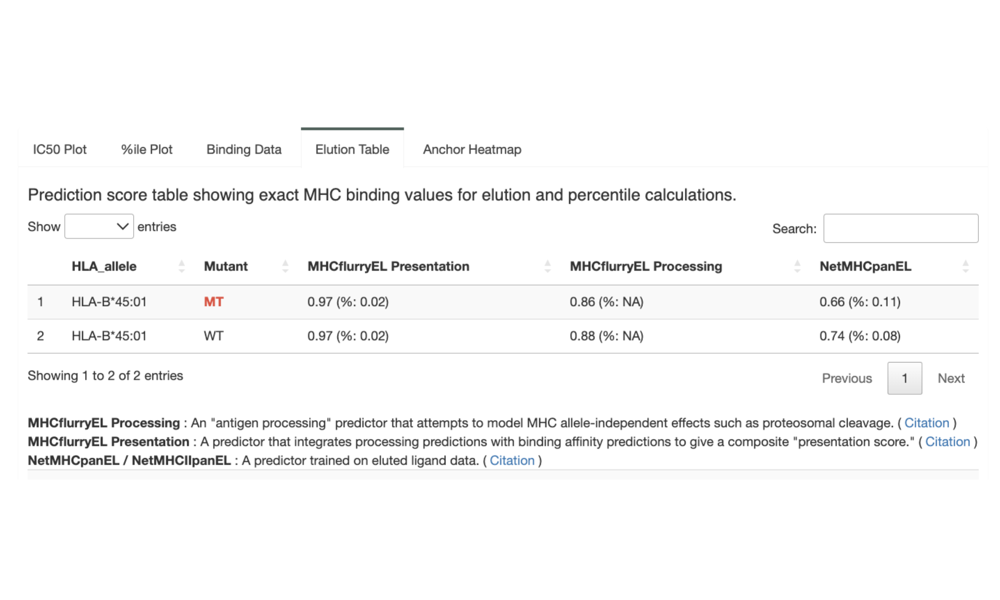
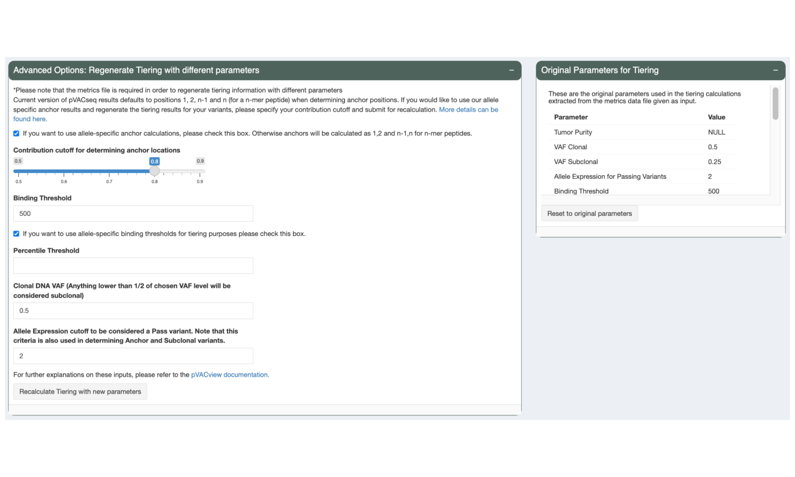

Chapter 5 Review Your Results in pVACview
5.1 Learning Objectives
This chapter will cover:
- Introduction to the pVACview module
- How to start pVACview
- How to load your pVACseq data into pVACview
- The pVACview user interface
- How to re-tier results in pVACview
- How to add comments to the variants in the report
- How to export the reviewed results
5.2 Introduction to the pVACview module
pVACview is a R shiny based tool designed to aid specifically in the prioritization and selection of neoantigen candidates for personalized cancer vaccines or other applications. It takes as inputs a pVACseq output aggregate report file (tsv format) and a corresponding pVACseq output metrics file (json). pVACview allows the user to launch an R shiny application to load and visualize the given neoantigen candidates with detailed information including that of the genomic variant, transcripts covering the variant, and strong-binding peptides predicted from the respective transcripts. It also incorporates anchor prediction data for a range of class I HLA alleles and peptides ranging from 8- to 11-mers. By taking all these types of information into account for the neoantigen candidates, researchers will be able to make more informed decisions when deciding final peptide candidates for experiments, personalized cancer vaccines, or T cell therapies designed to target neoantigens.
5.3 Starting pVACview
The pVACview R source code is distributed with every pVACseq run the in MHC_Class_I and/or MHC_Class_II subdirectories, depending on which prediction algorithms were run. For the HCC1395 pVACseq example run you did earlier, it can be started by running the following command in your Terminal:
pvacview run ${PWD}/pVACtools_outputs/MHC_Class_IThis starts a process for the pVACview R shiny application. Do not close the terminal window or end this process. You can now open pVACview in your browser by navigating to http://127.0.0.1:3333/.
5.4 Uploading pVACseq result data into pVACview
The starting screen shows an upload form. You will want to upload the Class I aggregated.tsv report under “1. Neoantigen Candidate Aggregate Report (tsv required)”. We generally recommend using Class I as the main report, as these are more robust than Class II. However, either can be uploaded here as long as the correct data type is selected under “Does this aggregate report file correspond to Class I or Class II prediction data?”
Upload the matching Class I metrics.json file under “2. Neoantigen Candidate Metrics file (json required)”. The Class II aggregated.tsv can now be uploaded as a supplementary file under “3. Additional Neoantigen Candidate Aggregate Report (tsv required)”.
This interface also optionally allows users to upload a gene-of-interest TSV file to, e.g. highlight variants on known cancer genes. We have provided such a TSV with your original HCC1395 downloaded data, called “cancer_census_hotspot_gene_list.tsv”.
After uploading all files, you can visualize the result by clicking on the “Visualize” button at the bottom of the page, or the “Visualize and Explore” tab in the sidebar.

5.5 The pVACview User Interface
5.5.1 Aggregate Report of Best Candidates by Variant
The main table in the Aggregate Report of Best Candidates by Variant panel shows the best neoantigen candidate for each variant. It lists the gene and amino acid change of the variant as well as additional information about the best peptide and the best transcript coding for it. These include, from left to right, the transcript support level, the best-binding HLA allele, the mutated positions of the best peptide, any positions in the peptide where the amino acid might be problematic for manufacturing, and the total number of neoantigen candidates passing the binding affinity threshold set by the user. If a gene of interest list was uploaded, variants on those genes have their gene highlighted with a green border.
Next, this table lists the IC50 peptide MHC binding affinity for both the mutant and the wild type. It also shows the percentile scores of the binding affinity values. For the mutant values, a heatmap coloring is applied to make it easier to visually identify well-binding peptides.
The next few columns show the coverage and expression of the best transcript with a bar plot background to represent where specific values fall across the entire patient sample.
The Tier column represents the tier assigned to the best peptide. The neoantigen candidates in this view were all sorted into the Pass tier but tiers such as Low Expression or Subclonal are applied to easily identify why a neoantigen candidate might be unsuitable for vaccine selection.
The Ref Match column reflects whether or not the best peptide was found in the reference proteome which is undesired since such peptides are not novel and including them in a vaccine might lead to an auto immune response.
Users are able to set a status for each candidate in the Evaluation column to mark them as Accept, Reject, or requiring further review.
The Investigate button can be clicked to see more detail for a variant. This will update the lower panels with details for the selected variant.

For candidates not sorted into the Pass tier, red borders visually highlight the attributes failed by the candidate.

5.5.2 Variant Information
The Variant Information panel shows more variant-level details of the selected neoantigen candidate.

On the left is a three-tab section. The first tab, “Transcript Sets of Selected Variant”, shows a list of transcript sets. pVACtools bins transcripts that code for the same set of neoantigen candidates into a set because the neoantigen-level information for all transcripts in a set will be identical. The transcript set containing the Best Peptide is highlighted in green. This table shows the number of transcripts in each set, the number of well-binding peptides the transcripts in the set code for, and the total expression of all the transcripts in the set.
The second tab, titled Reference Matches, shows the details for any reference matches of the neoantigen candidate. It repeats information about the Best Peptide sequence, the amino acid change, the mutated position, and the gene for easy reference. The mutated positions are notated in red in the Best Peptide sequence and the Query Sequence. The Query Sequence is a longer sequence around the somatic mutation. The Best Peptide subsequence is highlighted in yellow in the Query Sequence. For any 8mer subsequence of the query sequence, pVACtools looks for matches in the reference proteome. Any matches found are reported in the Hits table

The “Additional Data” tab shows the additional data for the variant if a Additional Neoantigen Candidate Aggregate Report was uploaded. It shows the Best Peptide and its information for this variant from the additional report. This can be used, e.g., when a Class I neoantigen candidate is a bad binder but all other metrics look good. Oftentimes this variant can be rescued by considering the best Class II neoantigen candidate instead.

The next section, “Variant & Gene Info”, shows coverage and expression information as well as the genomic coordinates for the variant.

The last section, “Peptide Evaluation Overview”, shows counts for how many peptides have been accepted, rejected, or marked for review. For most vaccines a certain minimum number of neoantigen candidates is desired so this panel makes it easy to review how many neoantigen candidates are still needed.

5.5.3 Transcript Set Detailed Data
When selecting a transcript set in the Variant Info panel, this panel will show details about the neoantigen candidates the transcripts in the set code for and as well as details on the transcripts themselves.
The Peptide Candidates from Selected Transcript Set tab shows a list of
mutant and matched wildtype peptides and their IC50 binding
affinity to the patient HLA alleles. Only neoantigen candidates where at least
one peptide-MHC binding prediction falls within the --aggregate-inclusion-threshold
will be shown in this table. For HLA alleles where the peptide is not
well-binding the prediction details will show X. This table also shows the
mutant position, whether or not the neoantigen candidate has any problematic
positions, and whether or not it failed the anchor criteria. This helps in
determining whether a neoantigen candidate was deprioritized when selecting the
Best Peptide. The Best Peptide is highlighted in green.

The Transcripts in Set tabs shows details of the transcripts in the selected set such as the transcript Ensembl ID, the transcript expression, the transcript support level, the biotype, and the transcript length. This reflects the criteria used in determining the Best Transcript. The Best Transcript is highlighted in green.

5.5.4 Additional Peptide Information
In the Additional Peptide Information panel, users can see more information for the neoantigen candidate selected in the Transcript Set Detailed Data panel.
The first tab, “IC50 Plot”, shows violin plots of the predicted IC50 binding affinity for each prediction algorithm for both the neoantigen candidate and its matched wildtype peptide. This can be used to check concordance of predictions between the different algorithms. It also allows for a detailed comparison between the mutant and wildtype predictions in addition to the median or lowest IC50 binding affinity used elsewhere. A solid line is used to represent the median score.

The %ile Plot tab shows a similar violin plot but for the predicted percentile scores as opposed to the IC50 binding affinity. A solid line is also used here to represent the median score.

The next tab, “Binding Data”, shows the IC50 binding affinity and percentile score but in table format.

The Elution Table tab shows the predicted elution scores and percentiles, if the appropriate prediction algorithm(s) were chosen.

Lastly, the Anchor Heatmap tab shows a heatmap overlayed over each neoantigen candidate from the selected transcript set. A darker color represents a higher probability that a position in the peptide is an anchor. Mutated positions are represented by red letters. More information about how to interpret the heatmap can be found in the graph on the right of this panel.

5.6 Regenerate Tiers with Custom Parameters
During review of your data it might become apparent that different tiering thresholds would’ve been more approriate. pVACview allows you to re-tier your data with custom parameters by adjusting the sliders and inputs in the “Advanced Options: Regenerate Tiering with different parameters” panel and pressing the “Recalculate Tiering with new parameters” button.
The parameters that were used in the original pVACseq run can still be viewed in the “Original Parameters for Tiering” panel and the tiers can be reset to those parameters by pressing the “Reset to original parameters” button.

5.7 Adding Comments to Variants
When reviewing neoantigen candidates in pVACseq, users are able to add comments on each variant, for example, describing what additional review is necessary. Please note that comments are not saved until the “Update Comment Section” button is pressed.

5.8 Exporting the Aggregated Table
Once review of the neoantigen candidates has been completed, the results can be exported by switching to the Export interface via the sidebar. This will export the Aggregated Report with the updated Evaluation column and comments added. The report can be exported in either TSV or Excel format.